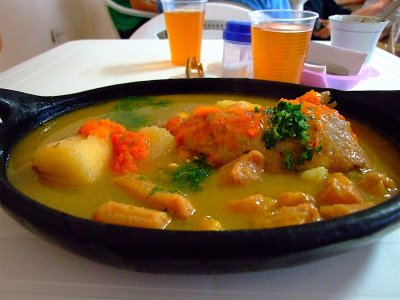

Sanchocho tradicional
El sancocho nariñense es un plato insignia de la gastronomía andina, caracterizado por su sabor profundo y su capacidad para reunir a las familias los fines de semana. A diferencia de otros sancochos colombianos, la versión tradicional de Nariño se prepara combinando tres carnes: res, cerdo y gallina campesina, cocinadas a fuego lento. Su inigualable consistencia se logra gracias a productos locales como la papa pastusa, el plátano, la yuca y el arracacha, sazonados con un guiso casero de cebolla, ajo y comino. Más que un alimento, este plato representa un ritual de unión familiar y un motor del turismo gastronómico en la región.